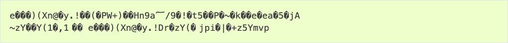

Standard Toolchain Setup for Linux and macOS
Installation Step by Step
This is a detailed roadmap to walk you through the installation process.
Setting up Development Environment
These are the steps for setting up the ESP-IDF for your ESP32.
Step 1. Install Prerequisites
In order to use ESP-IDF with the ESP32, you need to install some software packages based on your Operating System. This setup guide helps you on getting everything installed on Linux and macOS based systems.
For Linux Users
To compile using ESP-IDF, you need to get the following packages. The command to run depends on which distribution of Linux you are using:
Ubuntu and Debian:
sudo apt-get install git wget flex bison gperf python3 python3-pip python3-venv cmake ninja-build ccache libffi-dev libssl-dev dfu-util libusb-1.0-0
CentOS 7 & 8:
sudo yum -y update && sudo yum install git wget flex bison gperf python3 cmake ninja-build ccache dfu-util libusbx
CentOS 7 is still supported but CentOS version 8 is recommended for a better user experience.
Arch:
sudo pacman -S --needed gcc git make flex bison gperf python cmake ninja ccache dfu-util libusb python-pip
Note
CMake version 3.16 or newer is required for use with ESP-IDF. Run "tools/idf_tools.py install cmake" to install a suitable version if your OS versions does not have one.
If you do not see your Linux distribution in the above list then please check its documentation to find out which command to use for package installation.
For macOS Users
ESP-IDF uses the version of Python installed by default on macOS.
Install CMake & Ninja build:
It is strongly recommended to also install ccache for faster builds. If you have HomeBrew, this can be done via
brew install ccacheorsudo port install ccacheon MacPorts.
Note
If an error like this is shown during any step:
xcrun: error: invalid active developer path (/Library/Developer/CommandLineTools), missing xcrun at: /Library/Developer/CommandLineTools/usr/bin/xcrun
Then you need to install the XCode command line tools to continue. You can install these by running xcode-select --install.
Apple M1 Users
If you use Apple M1 platform and see an error like this:
WARNING: directory for tool xtensa-esp32-elf version esp-2021r2-patch3-8.4.0 is present, but tool was not found
ERROR: tool xtensa-esp32-elf has no installed versions. Please run 'install.sh' to install it.
or:
zsh: bad CPU type in executable: ~/.espressif/tools/xtensa-esp32-elf/esp-2021r2-patch3-8.4.0/xtensa-esp32-elf/bin/xtensa-esp32-elf-gcc
Then you need to install Apple Rosetta 2 by running
/usr/sbin/softwareupdate --install-rosetta --agree-to-license
Installing Python 3
Based on macOS Catalina 10.15 release notes, use of Python 2.7 is not recommended and Python 2.7 is not included by default in future versions of macOS. Check what Python you currently have:
python --version
If the output is like Python 2.7.17, your default interpreter is Python 2.7. If so, also check if Python 3 is not already installed on your computer:
python3 --version
If the above command returns an error, it means Python 3 is not installed.
Below is an overview of the steps to install Python 3.
Step 2. Get ESP-IDF
To build applications for the ESP32, you need the software libraries provided by Espressif in ESP-IDF repository.
To get ESP-IDF, navigate to your installation directory and clone the repository with git clone, following instructions below specific to your operating system.
Open Terminal, and run the following commands:
mkdir -p ~/esp
cd ~/esp
git clone -b v5.5.5 --recursive https://github.com/espressif/esp-idf.git
ESP-IDF is downloaded into ~/esp/esp-idf.
Consult ESP-IDF Versions for information about which ESP-IDF version to use in a given situation.
Step 3. Set up the Tools
Aside from the ESP-IDF, you also need to install the tools used by ESP-IDF, such as the compiler, debugger, Python packages, etc, for projects supporting ESP32.
cd ~/esp/esp-idf
./install.sh esp32
or with Fish shell
cd ~/esp/esp-idf
./install.fish esp32
The above commands install tools for ESP32 only. If you intend to develop projects for more chip targets then you should list all of them and run for example:
cd ~/esp/esp-idf
./install.sh esp32,esp32s2
or with Fish shell
cd ~/esp/esp-idf
./install.fish esp32,esp32s2
In order to install tools for all supported targets please run the following command:
cd ~/esp/esp-idf
./install.sh all
or with Fish shell
cd ~/esp/esp-idf
./install.fish all
Note
For macOS users, if an error like this is shown during any step:
<urlopen error [SSL: CERTIFICATE_VERIFY_FAILED] certificate verify failed: unable to get local issuer certificate (_ssl.c:xxx)
You may run Install Certificates.command in the Python folder of your computer to install certificates. For details, see Download Error While Installing ESP-IDF Tools.
Alternative File Downloads
The tools installer downloads a number of files attached to GitHub Releases. If accessing GitHub is slow then it is possible to set an environment variable to prefer Espressif's download server for GitHub asset downloads.
Note
This setting only controls individual tools downloaded from GitHub releases, it does not change the URLs used to access any Git repositories.
To prefer the Espressif download server when installing tools, use the following sequence of commands when running install.sh:
cd ~/esp/esp-idf
export IDF_GITHUB_ASSETS="dl.espressif.com/github_assets"
./install.sh
Note
For users in China, we recommend using our download server located in China for faster download speed.
Alternatively, you can set as well the environment variable PIP_INDEX_URL to the China mirror of PyPI.
cd ~/esp/esp-idf
export IDF_GITHUB_ASSETS="dl.espressif.cn/github_assets"
export PIP_INDEX_URL="https://mirrors.tuna.tsinghua.edu.cn/pypi/web/simple"
./install.sh
Customizing the Tools Installation Path
The scripts introduced in this step install compilation tools required by ESP-IDF inside the user home directory: $HOME/.espressif on Linux. If you wish to install the tools into a different directory, export the environment variable IDF_TOOLS_PATH before running the installation scripts. Make sure that your user account has sufficient permissions to read and write this path.
export IDF_TOOLS_PATH="$HOME/required_idf_tools_path"
./install.sh
. ./export.sh
If changing the IDF_TOOLS_PATH, make sure it is exported in the environment before running any ESP-IDF tools or scripts.
Note
Using IDF_TOOLS_PATH in variable assignment, e.g., IDF_TOOLS_PATH="$HOME/required_idf_tools_path" ./install.sh, without prior exporting, will not work in most shells because the variable assignment will not affect the current execution environment, even if it's exported/changed in the sourced script.
Step 4. Set up the Environment Variables
The installed tools are not yet added to the PATH environment variable. To make the tools usable from the command line, some environment variables must be set. ESP-IDF provides another script which does that.
In the terminal where you are going to use ESP-IDF, run:
. $HOME/esp/esp-idf/export.sh
or for fish (supported only since fish version 3.0.0):
. $HOME/esp/esp-idf/export.fish
Note the space between the leading dot and the path!
If you plan to use esp-idf frequently, you can create an alias for executing export.sh:
Copy and paste the following command to your shell's profile (
.profile,.bashrc,.zprofile, etc.)alias get_idf='. $HOME/esp/esp-idf/export.sh'
Refresh the configuration by restarting the terminal session or by running
source [path to profile], for example,source ~/.bashrc.
Now you can run get_idf to set up or refresh the esp-idf environment in any terminal session.
Technically, you can add export.sh to your shell's profile directly; however, it is not recommended. Doing so activates IDF virtual environment in every terminal session (including those where IDF is not needed), defeating the purpose of the virtual environment and likely affecting other software.
Step 5. First Steps on ESP-IDF
Now since all requirements are met, the next topic will guide you on how to start your first project.
This guide helps you on the first steps using ESP-IDF. Follow this guide to start a new project on the ESP32 and build, flash, and monitor the device output.
Note
If you have not yet installed ESP-IDF, please go to Installation and follow the instruction in order to get all the software needed to use this guide.
Start a Project
Now you are ready to prepare your application for ESP32. You can start with get-started/hello_world project from examples directory in ESP-IDF.
Important
The ESP-IDF build system does not support spaces in the paths to either ESP-IDF or to projects.
Copy the project get-started/hello_world to ~/esp directory:
cd ~/esp
cp -r $IDF_PATH/examples/get-started/hello_world .
Note
There is a range of example projects in the examples directory in ESP-IDF. You can copy any project in the same way as presented above and run it. It is also possible to build examples in-place without copying them first.
Connect Your Device
Now connect your ESP32 board to the computer and check under which serial port the board is visible.
Serial ports have the following naming patterns:
Linux: starting with
/dev/ttymacOS: starting with
/dev/cu.
If you are not sure how to check the serial port name, please refer to Establish Serial Connection with ESP32 for full details.
Note
Keep the port name handy as it is needed in the next steps.
Configure Your Project
Navigate to your hello_world directory, set ESP32 as the target, and run the project configuration utility menuconfig.
cd ~/esp/hello_world
idf.py set-target esp32
idf.py menuconfig
After opening a new project, you should first set the target with idf.py set-target esp32. Note that existing builds and configurations in the project, if any, are cleared and initialized in this process. The target may be saved in the environment variable to skip this step at all. See Select the Target Chip: set-target for additional information.
If the previous steps have been done correctly, the following menu appears:

Project configuration - Home window
You are using this menu to set up project specific variables, e.g., Wi-Fi network name and password, the processor speed, etc. Setting up the project with menuconfig may be skipped for "hello_world", since this example runs with default configuration.
Attention
If you use ESP32-DevKitC board with the ESP32-SOLO-1 module, or ESP32-DevKitM-1 board with the ESP32-MIN1-1/1U module, please enable single core mode (CONFIG_FREERTOS_UNICORE) in menuconfig before flashing examples.
Note
The colors of the menu could be different in your terminal. You can change the appearance with the option --style. Please run idf.py menuconfig --help for further information.
If you are using one of the supported development boards, you can speed up your development by using Board Support Package. See Additional Tips for more information.
Build the Project
Build the project by running:
idf.py build
This command compiles the application and all ESP-IDF components, then it generates the bootloader, partition table, and application binaries.
$ idf.py build
Running cmake in directory /path/to/hello_world/build
Executing "cmake -G Ninja --warn-uninitialized /path/to/hello_world"...
Warn about uninitialized values.
-- Found Git: /usr/bin/git (found version "2.17.0")
-- Building empty aws_iot component due to configuration
-- Component names: ...
-- Component paths: ...
... (more lines of build system output)
[527/527] Generating hello_world.bin
esptool.py v2.3.1
Project build complete. To flash, run this command:
../../../components/esptool_py/esptool/esptool.py -p (PORT) -b 921600 write_flash --flash_mode dio --flash_size detect --flash_freq 40m 0x10000 build/hello_world.bin build 0x1000 build/bootloader/bootloader.bin 0x8000 build/partition_table/partition-table.bin
or run 'idf.py -p PORT flash'
If there are no errors, the build finishes by generating the firmware binary .bin files.
Flash onto the Device
To flash the binaries that you just built for the ESP32 in the previous step, you need to run the following command:
idf.py -p PORT flash
Replace PORT with your ESP32 board's USB port name. If the PORT is not defined, the idf.py will try to connect automatically using the available USB ports.
For more information on idf.py arguments, see idf.py.
Note
The option flash automatically builds and flashes the project, so running idf.py build is not necessary.
Encountered Issues While Flashing? See the "Additional Tips" below. You can also refer to Flashing Troubleshooting page or Establish Serial Connection with ESP32 for more detailed information.
Normal Operation
When flashing, you will see the output log similar to the following:
...
esptool.py --chip esp32 -p /dev/ttyUSB0 -b 460800 --before=default_reset --after=hard_reset write_flash --flash_mode dio --flash_freq 40m --flash_size 2MB 0x8000 partition_table/partition-table.bin 0x1000 bootloader/bootloader.bin 0x10000 hello_world.bin
esptool.py v3.0-dev
Serial port /dev/ttyUSB0
Connecting........_
Chip is ESP32D0WDQ6 (revision 0)
Features: WiFi, BT, Dual Core, Coding Scheme None
Crystal is 40MHz
MAC: 24:0a:c4:05:b9:14
Uploading stub...
Running stub...
Stub running...
Changing baud rate to 460800
Changed.
Configuring flash size...
Compressed 3072 bytes to 103...
Writing at 0x00008000... (100 %)
Wrote 3072 bytes (103 compressed) at 0x00008000 in 0.0 seconds (effective 5962.8 kbit/s)...
Hash of data verified.
Compressed 26096 bytes to 15408...
Writing at 0x00001000... (100 %)
Wrote 26096 bytes (15408 compressed) at 0x00001000 in 0.4 seconds (effective 546.7 kbit/s)...
Hash of data verified.
Compressed 147104 bytes to 77364...
Writing at 0x00010000... (20 %)
Writing at 0x00014000... (40 %)
Writing at 0x00018000... (60 %)
Writing at 0x0001c000... (80 %)
Writing at 0x00020000... (100 %)
Wrote 147104 bytes (77364 compressed) at 0x00010000 in 1.9 seconds (effective 615.5 kbit/s)...
Hash of data verified.
Leaving...
Hard resetting via RTS pin...
Done
If there are no issues by the end of the flash process, the board will reboot and start up the "hello_world" application.
If you would like to use the Eclipse or VS Code IDE instead of running idf.py, check out Eclipse Plugin, VSCode Extension.
Monitor the Output
To check if "hello_world" is indeed running, type idf.py -p PORT monitor (Do not forget to replace PORT with your serial port name).
This command launches the IDF Monitor application.
$ idf.py -p <PORT> monitor
Running idf_monitor in directory [...]/esp/hello_world/build
Executing "python [...]/esp-idf/tools/idf_monitor.py -b 115200 [...]/esp/hello_world/build/hello_world.elf"...
--- idf_monitor on <PORT> 115200 ---
--- Quit: Ctrl+] | Menu: Ctrl+T | Help: Ctrl+T followed by Ctrl+H ---
ets Jun 8 2016 00:22:57
rst:0x1 (POWERON_RESET),boot:0x13 (SPI_FAST_FLASH_BOOT)
ets Jun 8 2016 00:22:57
...
After startup and diagnostic logs scroll up, you should see "Hello world!" printed out by the application.
...
Hello world!
Restarting in 10 seconds...
This is esp32 chip with 2 CPU core(s), WiFi/BT/BLE, silicon revision 1, 2 MB external flash
Minimum free heap size: 298968 bytes
Restarting in 9 seconds...
Restarting in 8 seconds...
Restarting in 7 seconds...
To exit IDF monitor use the shortcut Ctrl+].
If IDF monitor fails shortly after the upload, or, if instead of the messages above, you see random garbage similar to what is given below, your board is likely using a 26 MHz crystal. Most development board designs use 40 MHz, so ESP-IDF uses this frequency as a default value.

If you have such a problem, do the following:
Exit the monitor.
Go back to
menuconfig.Go to
Component config-->Hardware Settings-->Main XTAL Config-->Main XTAL frequency, then change CONFIG_XTAL_FREQ to 26 MHz.After that,
build and flashthe application again.
In the current version of ESP-IDF, main XTAL frequencies supported by ESP32 are as follows:
26 MHz
40 MHz
Note
You can combine building, flashing and monitoring into one step by running:
idf.py -p PORT flash monitor
See also:
IDF Monitor for handy shortcuts and more details on using IDF monitor.
idf.py for a full reference of
idf.pycommands and options.
That is all that you need to get started with ESP32!
Now you are ready to try some other examples, or go straight to developing your own applications.
Important
Some of examples do not support ESP32 because required hardware is not included in ESP32 so it cannot be supported.
If building an example, please check the README file for the Supported Targets table. If this is present including ESP32 target, or the table does not exist at all, the example will work on ESP32.
Additional Tips
Permission Denied Issue
With some Linux distributions, you may get the error message similar to Could not open port <PORT>: Permission denied: '<PORT>' when flashing the ESP32. This can be solved by adding the current user to the specific group, such as dialout or uucp group.
Python Compatibility
ESP-IDF supports Python 3.9 or newer. It is recommended to upgrade your operating system to a recent version satisfying this requirement. Other options include the installation of Python from sources or the use of a Python version management system such as pyenv.
Start with Board Support Package
To speed up prototyping on some development boards, you can use Board Support Packages (BSPs), which makes initialization of a particular board as easy as few function calls.
A BSP typically supports all of the hardware components provided on development board. Apart from the pinout definition and initialization functions, a BSP ships with drivers for the external components such as sensors, displays, audio codecs etc.
The BSPs are distributed via IDF Component Manager, so they can be found in ESP Component Registry.
Here is an example of how to add ESP-WROVER-KIT BSP to your project:
idf.py add-dependency esp_wrover_kit
More examples of BSP usage can be found in BSP examples folder.
Flash Erase
Erasing the flash is also possible. To erase the entire flash memory you can run the following command:
idf.py -p PORT erase-flash
For erasing the OTA data, if present, you can run this command:
idf.py -p PORT erase-otadata
The flash erase command can take a while to be done. Do not disconnect your device while the flash erasing is in progress.
Tip: Updating ESP-IDF
It is recommended to update ESP-IDF from time to time, as newer versions fix bugs and/or provide new features. Please note that each ESP-IDF major and minor release version has an associated support period, and when one release branch is approaching end of life (EOL), all users are encouraged to upgrade their projects to more recent ESP-IDF releases, to find out more about support periods, see ESP-IDF Versions.
The simplest way to do the update is to delete the existing esp-idf folder and clone it again, as if performing the initial installation described in Step 2. Get ESP-IDF.
Another solution is to update only what has changed. The update procedure depends on the version of ESP-IDF you are using.
After updating ESP-IDF, execute the Install script again, in case the new ESP-IDF version requires different versions of tools. See instructions at Step 3. Set up the Tools.
Once the new tools are installed, update the environment using the Export script. See instructions at Step 4. Set up the Environment Variables.